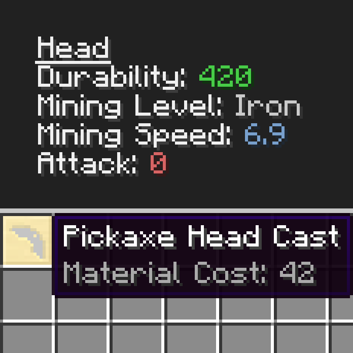

Tweakers Construct
This Minecraft mod allows you to change various values in tinkers' construct from a configuration file.
It currently contains the following tweaks:
- Change the cost of toolparts
- Lower or raise all durability values with a percentage
- Lower or raise all mining speed values with a percentage
- Modify specific stats of any material
- Remove any tool material
- Disable the invincibility of tools
If there are any tweaks that you would like to be added, please post a comment on curseforge.
Tweakers Construct on Curseforge
Tweakers Construct on Github